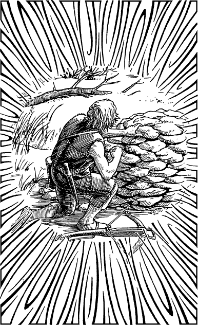

282
As you near the clearing, you leave the trail and take cover among some bushes that fringe the tree-line. For a few minutes you wait here and observe the settlement for signs of life. You can see a log cabin with a veranda, three small sheds, and a picket-fenced enclosure containing goats and chickens. When your senses detect no human presence, you enter the clearing and signal to Acraban to follow as you make your approach towards the cabin.
From the veranda you can see a second track which descends steeply towards a sandy cove. You intensify your vision and catch sight of a man on the beach who is kneeling beside a stone-covered mound. He has blond shoulder-length hair and he is dressed in breeches and a jerkin made from tanned goat hides. From the descriptions given to you by Lord Zinair, you feel sure that he must be Prince Karvas.

Elated by your discovery, you motion Acraban to follow as you leave the cabin and hurry down the steep path towards the beach. You are within 100 feet of the kneeling man when he hears you approaching. He turns to face you and, in an instant, he grabs a loaded crossbow that is lying beside him on the sand and he aims it at your chest.
If you wish to raise your hands to show the man that you mean him no harm, turn to 253.
If you decide to dive for cover among the boulders that lie on either side of the path, turn to 85.